A tour of the graphical user interface (GUI)
Use the batch form to analyze a pair of particle images, then add a physical scale, define a mask, adjust preprocessing, and inspect the resulting field. The final section shows where to find calibration, stereo, and particle-tracking tools.
Install the companion HammerheadGUI package and open its batch form:
pkg> add HammerheadGUI # `]` at the julia> prompt opens pkg>
julia> using HammerheadGUI
julia> batch_runner() # open an empty batch formEach step first describes what to do in the window. The accompanying code performs the same action through a controller. At the REPL, use the mouse steps if you prefer. See the controller–view split for details.
First vectors
Add your image files to the batch form with "add frames…". This example makes a synthetic vortex pair with a bright rectangular reflection in the upper-left corner. The scene code is available if you want to change it. The reflection gives us a visible reason to draw a mask.
using Hammerhead
using Hammerhead.SyntheticData
using Random
include(joinpath(pkgdir(Hammerhead), "docs", "lit", "helpers", "advanced_tutorials.jl"))
imgA, imgB = tutorial_gui_pair()([0.031031502862142304 0.0 … 1.5138904452467428 0.4406058066504688; 0.0 0.007805029870754142 … 1.058618622967402 0.4483927037042605; … ; 0.03444037751267632 0.041776247354604945 … 0.5971645145668342 0.00438375692164264; 0.002397312134944738 0.026762008962283833 … 0.0481546432347918 0.010729164842007428], [0.018308061649635967 0.0 … 1.1734928108782436 0.8466798775241189; 0.026040490975457915 0.0 … 1.5877773125566115 1.3420139809590432; … ; 0.011054175927132738 0.0 … 0.09849941592448028 0.0; 0.0 0.043966437289037666 … 0.10958801990481534 0.021085860760791955])In the BatchRunner form, click add frames…, select the two images in A/B order, choose medium in the effort menu, and press run. To use the file picker with these generated arrays, save them as images first. The equivalent controller calls are:
using HammerheadGUI
bc = BatchRunner(files = Any[imgA, imgB]) # "add frames…"
set_effort!(bc, :medium) # the "effort" menu
start!(bc; async = false) # the "run" button
bc.status[]"done: 1 pairs"The GUI runs the batch in the background. A progress bar counts pairs; "cancel" stops after the current pair and keeps completed results. "View results" becomes available after the first pair and adds later results as they finish. Open the same explorer from code with result_explorer:
ex = ResultExplorer(bc.results[])
fig = result_explorer(ex)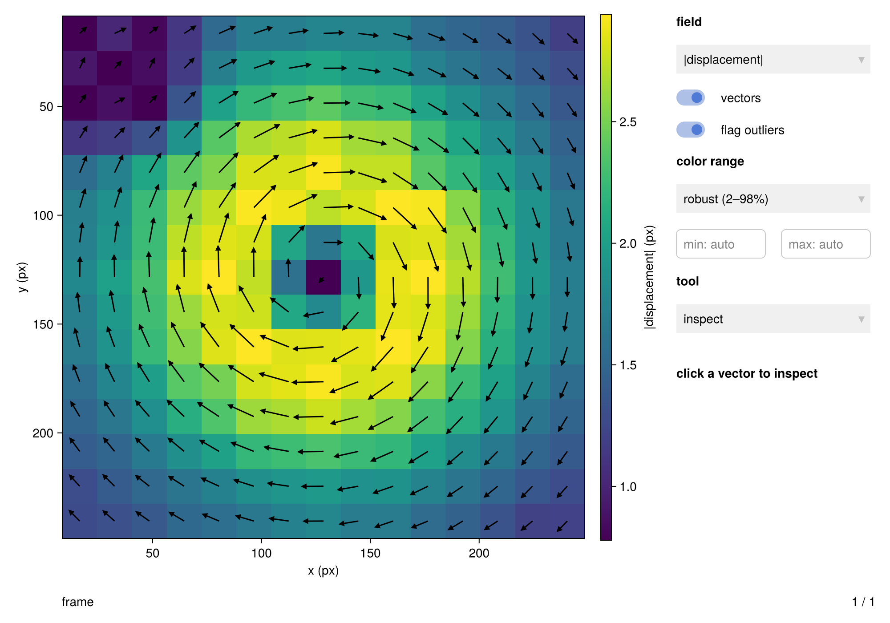
The explorer shows displacement magnitude under the vector arrows, a field menu with components and diagnostics, a frame slider for longer recordings, and click-to-inspect on every vector.
This result uses pixel coordinates and displacement per frame. Add a physical scale to display velocity units, mask an excluded region, and choose preprocessing that improves the correlation at a test location.
Improve it: physical units
scale_tool measures a known distance in an image. Open a calibration image, click two neighboring marks, and enter their physical separation. For this synthetic scene, we declare a scale of 0.02 mm/px and a 1 ms frame interval. The two generated marks are 64 px apart, representing 1.28 mm at that scale. With recorded data, photograph a target in the same camera setup as the particle images.
plate, dot1, dot2 = tutorial_gui_scale_plate()([0.0 0.0 … 0.0 0.0; 0.0 0.0 … 0.0 0.0; … ; 0.0 0.0 … 0.0 0.0; 0.0 0.0 … 0.0 0.0], (64.0, 128.0), (128.0, 128.0))In the scale-tool window, click the centers of two neighboring dots, enter 1.28 mm, set the frame interval to 1 ms, and read the pixel size in the status line. These controller calls reproduce the clicks:
st = ScaleTool(plate)
HammerheadGUI.Controllers.click!(st, dot1[1], dot1[2])
HammerheadGUI.Controllers.click!(st, dot2[1], dot2[2])
set_separation!(st, 1.28) # mm between the clicks
st.dt[] = 0.001 # 1 ms between frames
st.time_unit[] = "s"
scale_tool(st)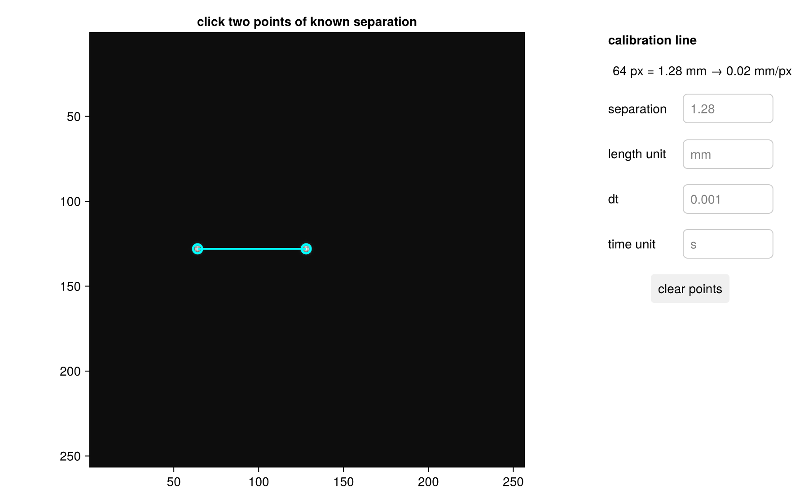
Apply to batch copies the pixel size, dt, and unit labels into the batch form (apply_scale!). Future results display positions in mm and velocities in mm/s.
apply_scale!(bc, st)
physical_scale(st)PhysicalScale(pixel_size = 0.02 mm/px, dt = 0.001 s/frame)Improve it: mask what should not correlate
Open mask editor on frame A. The bright square in the upper-left corner hides particles and should not contribute vectors. Left-click just outside its four corners, then right-click to close the polygon. Turn on show mask to check coverage. The controller calls reproduce those actions:
me = MaskEditor(imgA)
fig = mask_editor(me)
for (x, y) in ((9, 9), (63, 9), (63, 63), (9, 63))
add_vertex!(me, x, y)
end
close_active!(me)
me.show_mask[] = true # the "show mask" toggle
fig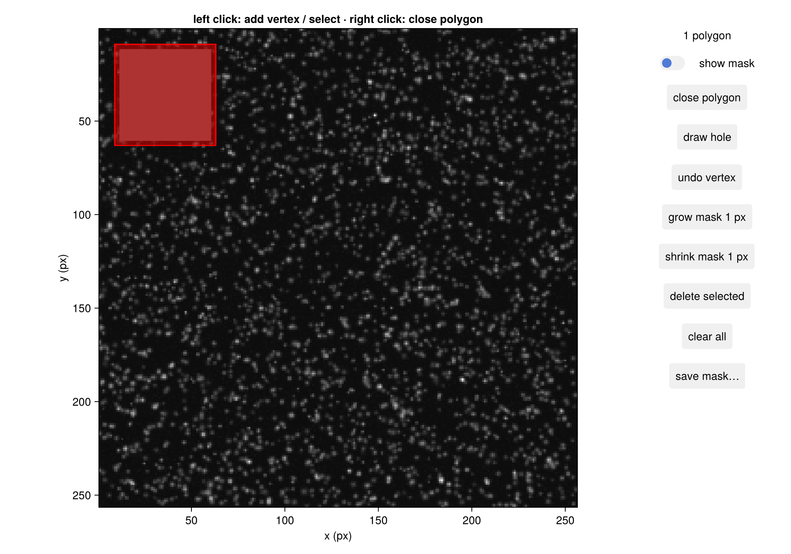
The editor exports an image-sized Bool mask, where true means excluded (the masking model). The batch form takes the mask directly ("load mask…" reads a saved mask image instead):
bc.mask[] = polygon_mask(me)
count(bc.mask[])2970Improve it: preprocessing, tuned with a correlation probe
Open preprocess… from the batch form. preprocess_preview composes the core preprocessing set into an ordered, toggleable pipeline with a live raw/processed comparison. Give the PreprocessPreview controller the frame's pair partner and it also runs a single-window correlation probe: click a location on the processed image and that window's displacement and peak ratio update live as you toggle and tune steps. Use those values to assess how a preprocessing change affects the measured displacement:
pp = PreprocessPreview(imgA; pair = imgB)
set_step_param!(pp, :highpass_filter, :sigma, 5)
HammerheadGUI.Controllers.click!(pp, 190.0, 128.0) # probe off the vortex core
preprocess_preview(pp)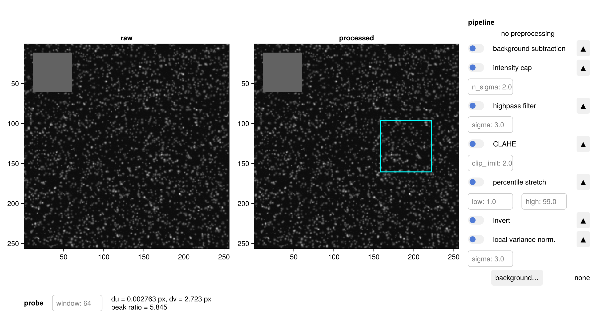
raw_probe = probe_summary(pp)"du = 0.002763 px, dv = 2.723 px\npeak ratio = 5.845"Record the raw displacement and peak ratio, then toggle highpass filter and compare them at the same window. Keep the step only if it improves the peak ratio without changing the displacement substantially.
enable_step!(pp, :highpass_filter)
filtered_probe = probe_summary(pp)
(raw = raw_probe, highpass = filtered_probe)(raw = "du = 0.002763 px, dv = 2.723 px\npeak ratio = 5.845", highpass = "du = -0.006624 px, dv = 2.701 px\npeak ratio = 6.036")Repeat the probe at several representative bright, dim, and high-gradient locations before applying a step to a whole batch. The code below makes a local decision for this example: keep highpass only if it raises the peak ratio at this location and changes the measured displacement by less than 0.5 px. That limit illustrates the comparison; choose a tolerance from your measurement requirements.
filtered_values = pp.probe_result[]
enable_step!(pp, :highpass_filter, false)
raw_values = pp.probe_result[]
keep_highpass = filtered_values.peak_ratio > raw_values.peak_ratio &&
hypot(filtered_values.du - raw_values.du,
filtered_values.dv - raw_values.dv) < 0.5
enable_step!(pp, :highpass_filter, keep_highpass)
(keep_highpass = keep_highpass, selected_probe = probe_summary(pp))(keep_highpass = true, selected_probe = "du = -0.006624 px, dv = 2.701 px\npeak ratio = 6.036")"Use in batch" installs the pipeline; from code that is set_preprocess!, which snapshots the steps so later preview edits cannot affect a running batch:
set_preprocess!(bc, pp)BatchRunner(2 frames, schedule [64, 32, 32])Re-run with the full setup
Back on the batch form: scale, mask, and preprocessing are now set, and the "custom" effort setting exposes the manual multi-pass window schedule and accuracy options. Use the default 64/32/32 px schedule with the uncertainty estimator switched on:
set_effort!(bc, :custom) # back to the manual parameter form
bc.uncertainty[] = true # the "uncertainty" toggle
fig = batch_runner(bc)
start!(bc; async = false)
fig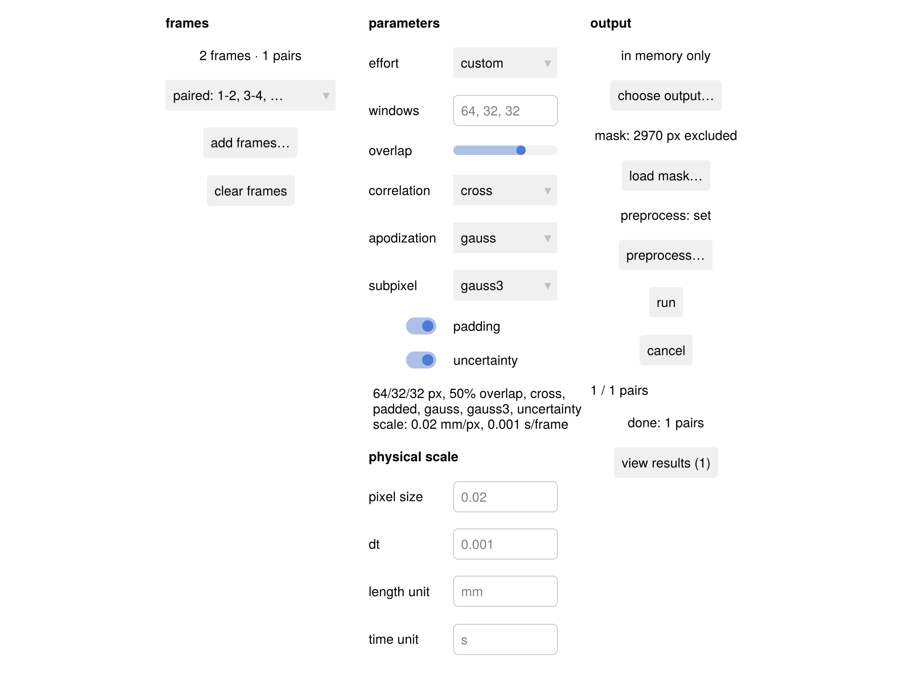
The batch returns a Vector of PIVResults, each carrying the physical scale:
bc.results[]1-element Vector{PIVResult}:
PIVResult{Float64}(15×15 grid, 0 outliers, 9 masked)Explore and analyze
Open the explorer again. Because the results now carry a scale, every axis, colorbar, and inspection panel reads in physical units:
ex = ResultExplorer(bc.results[])
fig = result_explorer(ex)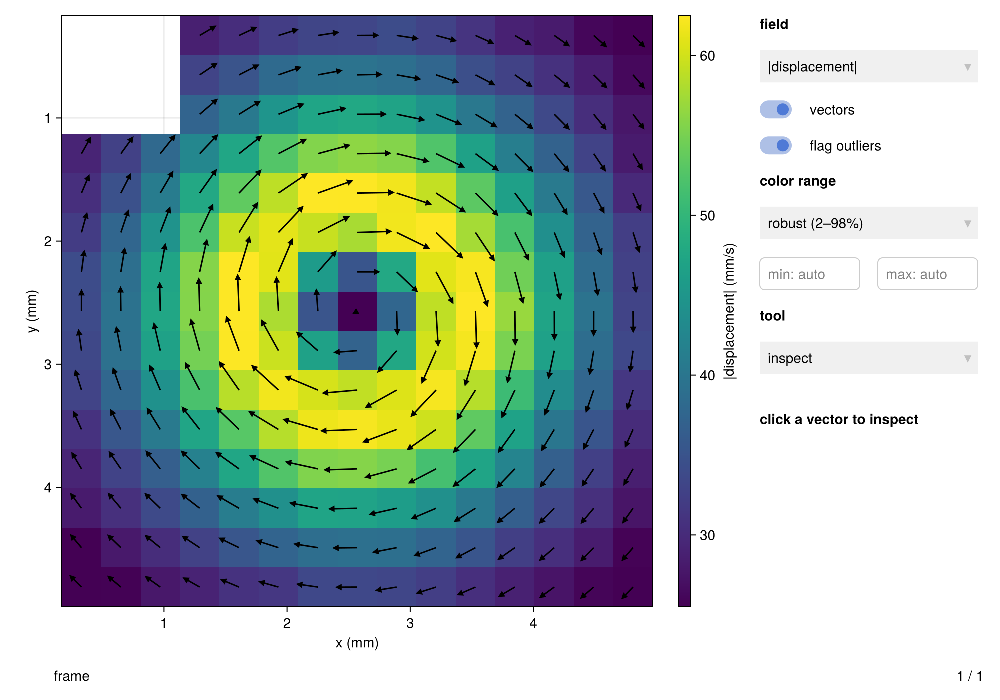
The field menu holds the components and diagnostics plus the derived fields: vorticity, divergence, strain rate, swirling strength, and Q, computed via flow_derivatives and labelled 1/s here. The colorbar range defaults to a robust 2–98% percentile band over the valid vectors (color_limits) so outliers cannot wash it out, with manual overrides in the "color range" group. Switch to vorticity and inspect a vector near the core (the axes are in millimetres now):
set_field!(ex, :vorticity)
w = last(current_result(ex).x) # field extent, mm
select_nearest!(ex, w / 2, w / 2)
describe_selection(ex)"window (7, 7)\nx = 2.25 mm, y = 2.25 mm\nu = 30.28 mm/s\nv = -34.29 mm/s\npeak ratio = 2.765\ncorr. moment = 1.046\nσu = 1.623 mm/s, σv = 2.135 mm/s\nstatus: valid"fig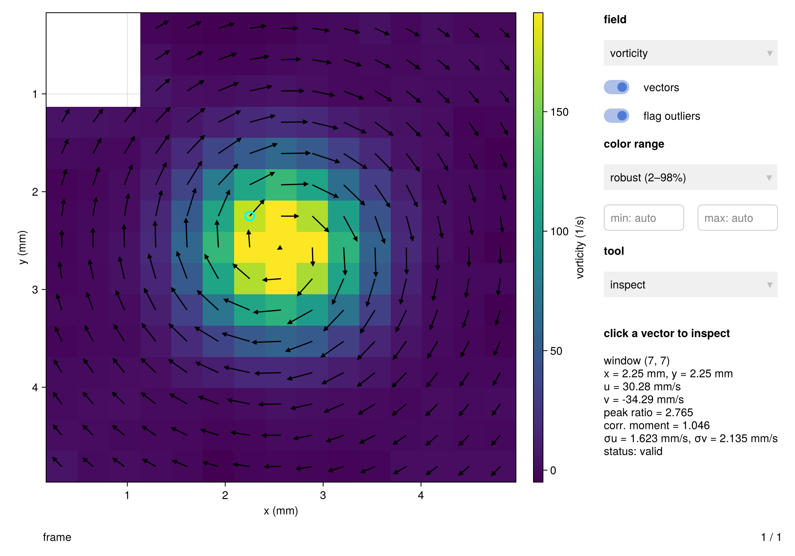
To see why derivatives need careful vectors, process the same masked pair at low and medium effort, then compare vorticity on a shared color scale. Open each result in the explorer and switch its field menu to vorticity; the figure below puts the same comparison side by side. Look near the reflection boundary for isolated spikes before interpreting a small vortex.
using CairoMakie
low = run_piv(imgA, imgB; effort = :low, mask = bc.mask[])
medium = run_piv(imgA, imgB; effort = :medium, mask = bc.mask[])
let
comparison = Figure(size = (760, 360))
for (i, (r, label)) in enumerate(((low, "low effort"), (medium, "medium effort")))
ax = Axis(comparison[1, i]; title = label, xlabel = "x (px)",
ylabel = "y (px)", yreversed = true, aspect = DataAspect())
hm = heatmap!(ax, r.x, r.y, permutedims(vorticity(r));
colorrange = (-0.2, 0.2), colormap = :balance)
i == 2 && Colorbar(comparison[1, 3], hm; label = "vorticity (1/frame)")
end
comparison
end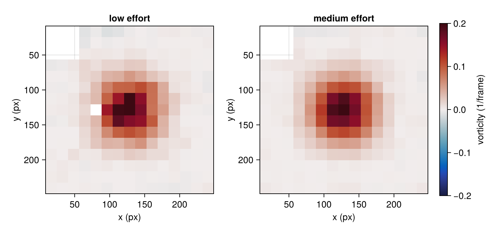
If a small feature appears in only one run or follows flagged vectors, inspect the source images and validation flags before reporting it as flow.
The tool menu adds analysis on planar results. profile samples u, v, and |V| along a two-click line (extract_profile), drawn in a side panel; circulation accumulates a contour (right-click closes it) and evaluates circulation with both the line-integral and vorticity-area estimators:
set_tool!(ex, :profile)
HammerheadGUI.Controllers.click!(ex, 0.1w, 0.5w)
HammerheadGUI.Controllers.click!(ex, 0.9w, 0.5w)
fig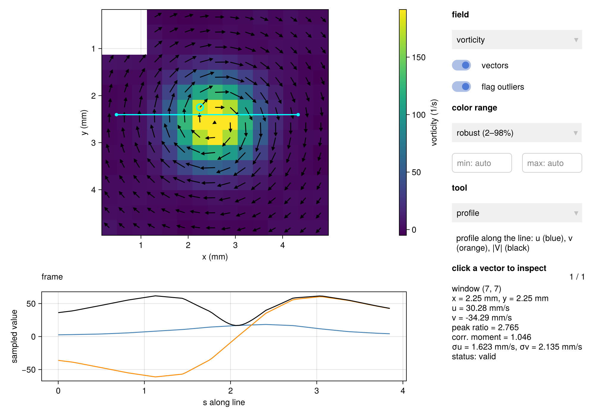
set_tool!(ex, :circulation)
for (px, py) in ((0.35, 0.35), (0.75, 0.35), (0.75, 0.75), (0.35, 0.75))
HammerheadGUI.Controllers.click!(ex, px * w, py * w) # clear of the mask
end
HammerheadGUI.Controllers.alt_click!(ex)
tool_summary(ex)"Γ (line) = 395.8 mm²/s\nΓ (vorticity area) = 385.6 mm²/s"Beyond the planar workflow
Calibration review. calibration_review runs the dot-grid detection on real plate images, fits a camera, and shows each plate with its dots colored by reprojection error. On the Particle Image Velocimetry (PIV) Challenge case-4E plates from the real stereo tutorial:
dir = joinpath(pkgdir(Hammerhead), "test", "reference_images", "E")
plates = [load_image(joinpath(dir, "E_camera_1_z_$k.png")) for k in (1, 4, 7)]
calibration_review(plates, [-3.0, 0.0, 3.0]; spacing = 15.0,
two_level = true, level_separation = 3.0, origin_offset = (30.0, 7.5))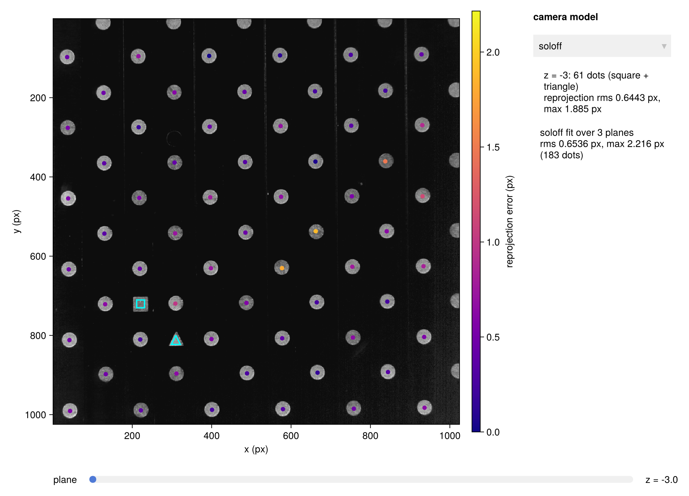
The fiducial markers appear in cyan. Use the slider to inspect each plane and the camera-model menu to refit. For guidance on physical-plate residuals, see the stereo-rig how-to. Its sibling selfcal_review browses a SelfCalibrationReport with the per-pass disparity maps in an embedded explorer.
Stereo batch. stereo_calibration embeds two of these reviews side by side and builds the shared-grid ImageDewarper pair (build_dewarpers); stereo_batch_runner then drives run_piv_stereo_sequence over two synchronized frame lists. It shows live progress, results, and incremental output like the planar form. See the GUI how-to for the workflow.
Scattered results. The explorer browses all four persisted result types, mixed sequences included. A PTVResult draws as a colored particle scatter with its scattered field menu:
ptv = run_ptv(imgA, imgB)
result_explorer(ptv)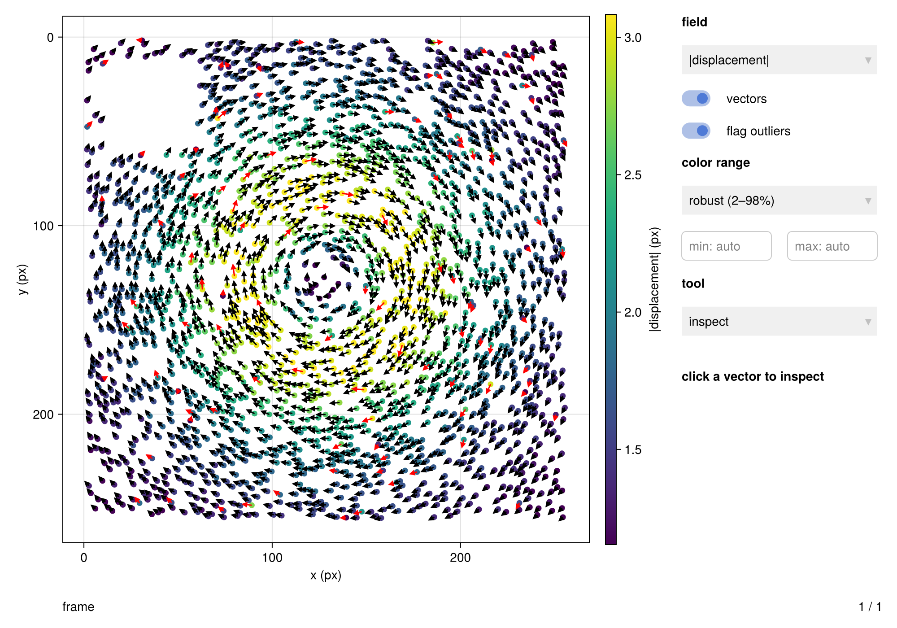
Where to go next
- Task recipes — masks from files, batch output, live viewing, stereo: Work interactively with the GUI.
- For controller functions behind the widgets, see The GUI's controller–view split.
- The full API: GUI reference.
This page was generated using Literate.jl.